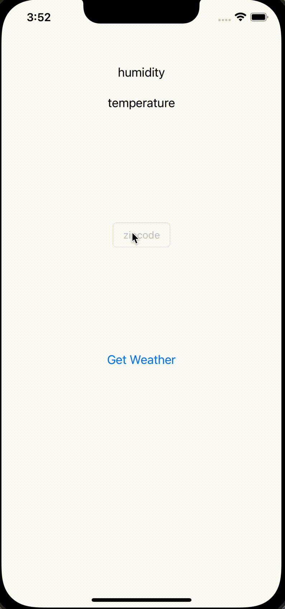
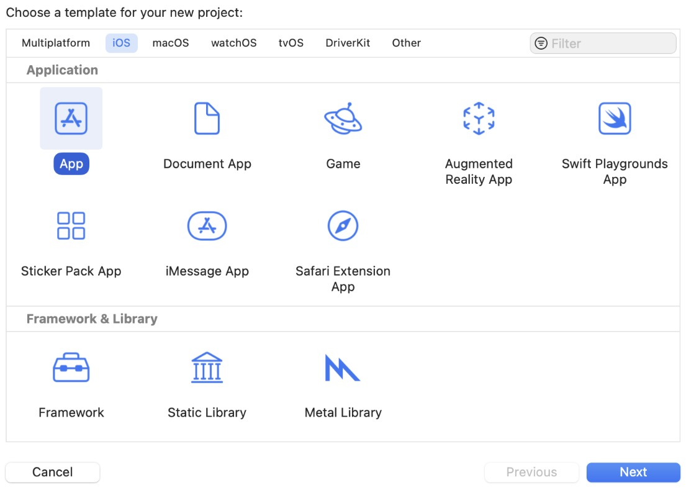
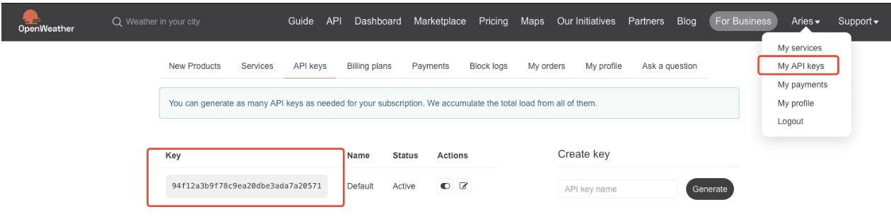
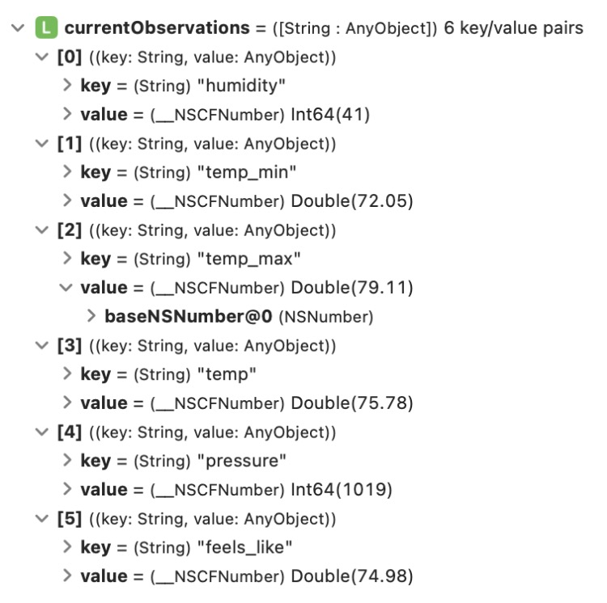
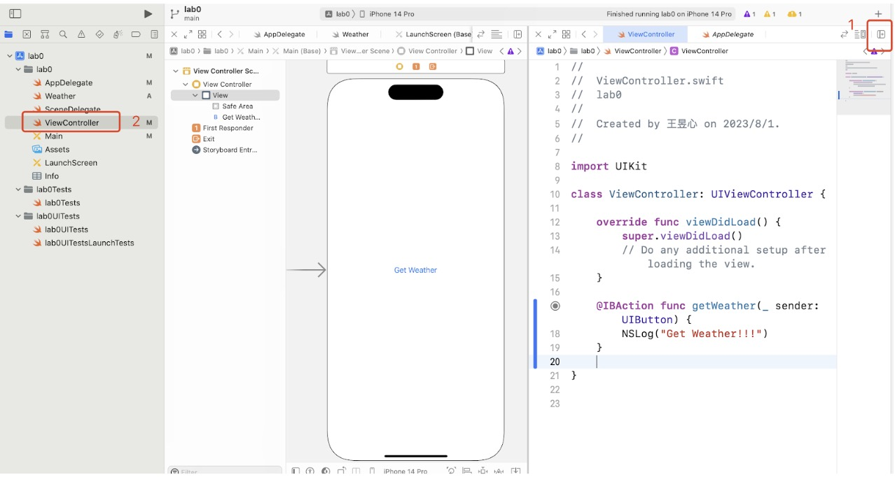
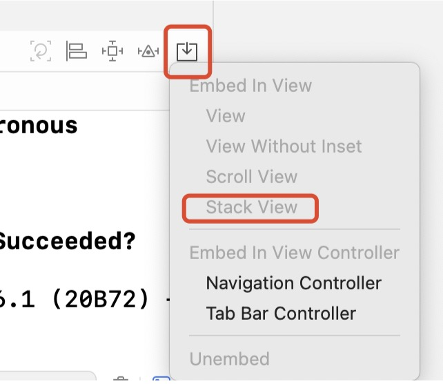
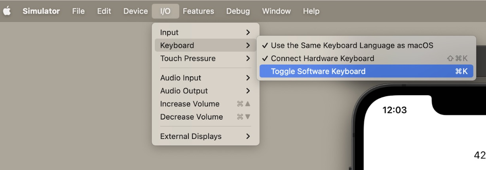

Xcode's Layout
First, a little about Xcode's layout (note this is slightly dated, but the current layout remains very similar): bottom: debugger (bottom left:variables, bottom right:console)")
In this lab, we cover the basics of the Xcode IDE, the iOS Simulator, Xcode's Documentation Viewer, and the Swift programming language. By the end of lab, we'll have built a simple iPhone application that displays weather from the OpenWeather API.
To complete this lab, you'll need to download Xcode.
| View Documentation: | ⌥+Click |
| Open Docs: | ⇧⌘0 |
| Go to Definition: | ⌘+Click |
| Open file Quickly: | ⇧⌘O |
| Press Home Button: | ⇧⌘H |
| Rotate Left | ⌘← |
| Rotate Right | ⌘→ |
| If the keyboard isn't appearing/disappearing as expected: | ⌘K |
⌘ = Command | ⌥ = Option | ⇧ = Shift
You may check Apple's Swift Tour or Apple's Swift basics for details.

You're building an app that basically loads the weather.
The fetchWeather is asynchronous. If there's no network, the app shouldn't hang or crash.
We've recorded videos with instructions on how to complete the lab in Swift. (The videos have no sound.) The goal is to get you comfortable with Xcode, the docs, the simulator, and Swift.
The videos build off of one another. You can do the assignment in your own way, or in the exact way it's done in the videos. It's entirely up to you.
The videos were recorded a few years ago, so some details about XCode's user inferface and Swift have changed. Also, the recordings were based on Wunderground API, which is no longer available. We suggest using the OpenWeather API to get current weather conditions instead. You can see an example JSON response in OpenWeather documentation. We have noted changes for each video, if applicable, at the description before the corresponding video.
We create the project and print "Hello World". You'll also notice that we resize the simulator, and click on some of the menu bars. This just so that you see what those buttons do.
When creating a project, first select “App” (you won't see single-view application), then select "Storyboard" for "User Inferface". Another option is "SwiftUI", which is actually a newer method but is not compatible with the tutorial videos.
Make sure you choose iOS when creating a new project. (DO NOT use macOS).
Why? The default life cycle in iOS is UIkit while macOS uses Cocoa.
What is the difference between them?
Read more here: Cocoa and UIkit.

General setting in lab0 for latest Xcode.

Weather ClassHere, we define a weather class with some properties and methods.
Changes:
Weather MethodsWe add some details to the weather methods from the previous video. In the next video, we instantiate the weather class, and debug it. This video contains an intentional error. We'll debug it in the next one.
Changes:
Make sure to update the URLs and APP IDs with the ones you receive from OpenWeather. More details can be found on the documentation
The url string is
"https://api.openweathermap.org/data/2.5/weather?zip=\(zip)&appid=\(APP_ID)&units=imperial".
Create an API key by registering on the website for the free plan. You will receive an API Key in your email.
You may need to update some of the response field names if OpenWeather doesn't provide them (e.g. windString). The specifics of which fields you are displaying aren't super important (you need to at least have the current temp) - just include 4-5 different ones like humidity, wind speed, etc.
How to generate your own APP IDs?
Create an account with your email and you will find you own id under your account -> My API keys

Weather
There was an error with weather. We illustrate some of the tools the debugger has.
Using the debugger will make your life much, much easier, and we think it's worth learning.
Changes: Take a look at an example JSON response in OpenWeather API documentation.
The correct key for JSON is "main", instead of "current_observation".
What should be the key for current weather description?
For other values, the JSON response returns a number, not a string. We need to cast it into
Double before using it in a meaningful string, e.g.
self.windString = "Wind speed: \(currentObservations["temp"] as! Double) mph"Can you find the correct key for each field (e.g. "humidity" for humidity)?
Think about following questions when you debug:
What is contained in jsonObjectTmp?

What contended in currentObservations?

What contended in currentObservations?
We add a new button to the interface and define its constraints.
We're pressing the control key while dragging from the button to the
ViewController.swift file.
In new versions of XCode, the Library button (where you add UI elements like Button and Label) is the plus sign button at the top right corner instead. Also, you can show an Assistant editor by clicking Editor > Assistant or by using the following shortcut: ⌃⌥⌘↩︎.
How do I insert a button?

How to insert action? Connect button with your code?
Make sure you select iPhone instead of iPad when you do simulation.

This is pretty straightforward. We're making the button actually do stuff now.
Again remember to press the control key (⌃) while dragging!
We add some labels to display the weather. Note how we're using stack view here.
There are at least 5 ways to lay out elements in Xcode. This is probably the fastest.
Do not worry about the exact alignment of the elements too much, as long as they show up on the simulators. If they don't, some constraints may need to be changed or deleted (check the View Controller > View > Constraints on the left).
How to group txt?

We now update the UI Labels when results are fetched from the API.
This is about showing and hiding the keyboard. If the keyboard does not show up, try pressing ⌘K (Hardware > Keyboard > Toggle Software Keyboard) to see if the keyboard shows up.
Changes:
If the keyboard does not show up, try I/0 > Keyboard > Toggle Software Keyboard) to see if the keyboard shows up.

Please check this link to learn more about async/await in Swift
We update the app to work asynchronously. Mobile devices often have very flaky connections, so it's important to know how to deal with them.
We don't have a video here. Instead, we put the code of two important functions here. You may try them, or write your own.
"Weather.swift": fetchWeatherForZip function
func fetchWeatherForZip(zip: String, completionHandler: @escaping (Bool) -> Void) -> Void {
console.log("Getting for: \(zip)")
let urlString: String = "https://api.openweathermap.org/data/2.5/weather?zip=\(zip)&appid=\(APP_ID)&units=imperial"
console.log(urlString)
let weatherURL = URL(string: urlString)
let session = URLSession.shared
let request = URLRequest(url: weatherURL!, cachePolicy: URLRequest.CachePolicy.useProtocolCachePolicy, timeoutInterval: 5.0)
let task = session.dataTask(with: request, completionHandler: {(data, response, error) in
let ret = self.parseData(data: data)
DispatchQueue.main.async(execute: {()->Void in completionHandler(ret)})
})
task.resume()
}"ViewController.swift" getWeather function (Button Handler)
@IBAction func getWeather(_ sender: UIButton) {
NSLog("Get weather!!")
sender.isEnabled = false
weather.fetchWeatherForZip(zip: zip.text!, completionHandler: {(ret: Bool)->Void in
if (ret)
{
NSLog("Succeeded")
self.temp.text = String(self.weather.currentTemp)
//add your fields here
} else {
NSLog("Failed")
}
sender.isEnabled = true
})
zip.resignFirstResponder()
}Questions(Optional): Could you write your own code to achieve Async?